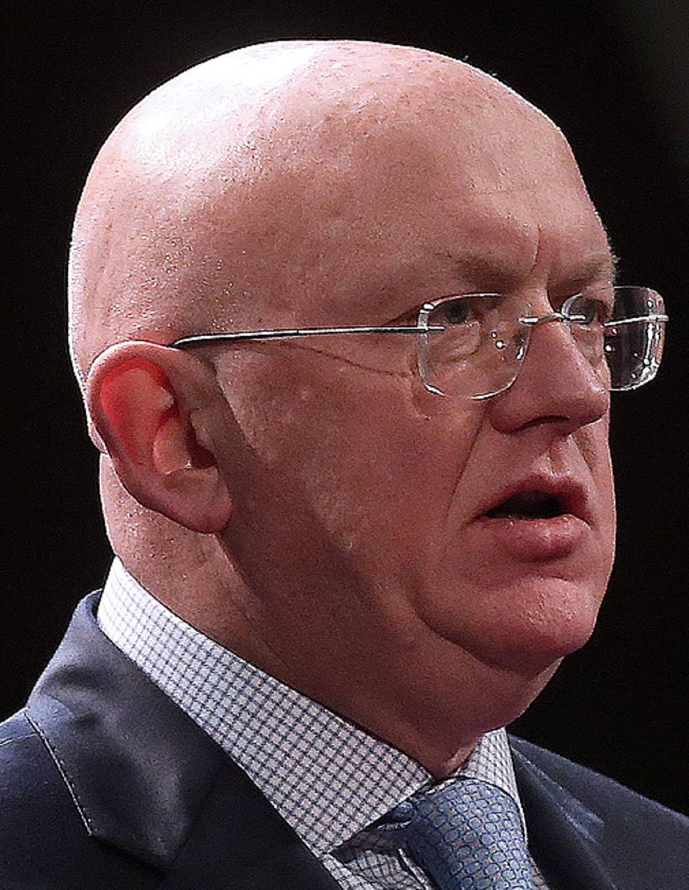

The veto as a weapon. The UN as a stage.

Nebenzya is the man who has blocked over 20 UN Security Council resolutions on Ukraine since 2022. At the UN he does not negotiate — he performs. Every Security Council session is a media production: a prepared narrative broadcast to 193 countries simultaneously, with the veto as the weapon and Russian state television as the intended audience.
July 12, Moscow. Graduated from MGIMO (Moscow State Institute of International Relations), the principal training ground for Soviet and later Russian diplomats. Specialization: international law and multilateral diplomacy. Fact
Works at Soviet and then Russian embassies in New York, Vienna, and Geneva. Specialises in multilateral negotiations — disarmament, UN reform, Security Council procedure. Forms the tactical and rhetorical toolkit he will deploy in 2017–2025.
Russia's No. 2 at the UN in New York. Participates in debates on Syria, Libya, and the Middle East. Learns to exploit procedural loopholes, delay votes, and frame vetoes as "protecting the Charter." Fact
Oversees multilateral affairs and UN policy from Moscow. Works directly under Lavrov. Coordinates Russia's positions on Ukraine (post-2014), Syria (bombing of Aleppo), and the MH17 investigation. Ensures positions are aligned before every Security Council session.
Appointed August 2017. Within months blocks a Security Council resolution on the Salisbury Novichok attack. Becomes Russia's main UN spokesperson — he and Zakharova divide labour: she handles domestic media, he handles the global stage. Fact
After the Novichok poisoning of the Skripals, Nebenzya convenes an emergency Security Council session — not to cooperate with the investigation but to generate alternative versions. Proposes 11 competing hypotheses, accuses the UK of fabrication, and blocks OPCW access. Interp.
Since February 24, 2022 has blocked more than 20 Security Council resolutions on Ukraine — on ceasefire, humanitarian corridors, accountability for civilian deaths, and MH17. EU personal sanctions March 2022 (Regulation EU 2022/330). UK sanctions imposed simultaneously. Entry bans to 27 EU states and the UK. Fact
Nebenzya has turned the veto into a propaganda tool. Each of the 20+ vetoes on Ukraine serves three functions simultaneously: it blocks a legal decision, generates a media spectacle, and signals to Russia's domestic audience that the West is powerless. The session is planned like a television broadcast: opening monologue, list of accusations, rhetorical questions addressed not to diplomats but to the camera, closing veto. Interp.
The "doubt factory" tactic: when confronted with an established fact (Novichok, MH17, Bucha) Nebenzya does not refute it — he produces a proliferation of alternative versions. In the Salisbury case he publicly proposed 11 competing hypotheses, knowing that none would be investigated. The goal is not to convince but to confuse: by flooding the information space with noise he makes it impossible for observers to focus on the actual evidence. Interp.
Nebenzya works in tandem with Zakharova: she shapes the domestic audience, he shapes the international one. Together they create the illusion that Russia's position has been consistently stated, heard, and is based on fact. In reality the Security Council speeches are pre-written in Moscow and serve as cues for RT and TASS rather than contributions to diplomacy. Interp.
EU — personal sanctions since March 2022 (Council Regulation EU 2022/330). Ground: "active role in the diplomatic covering of the aggression against Ukraine and systematic blocking of UN Security Council resolutions." Asset freeze, travel ban to all 27 EU member states. Fact
UK — equivalent measures under the Russia (Sanctions) (EU Exit) Regulations 2019 as amended. Asset freeze, UK entry ban. Fact
Diplomatic immunity as UN Permanent Representative means sanctions do not restrict his access to UN Headquarters in New York (under the 1947 UN Headquarters Agreement). However, assets in EU and UK jurisdictions are frozen and personal travel outside UN business is prohibited.
All claims based on open public sources. Facts marked Fact have primary sources. Marked Interp. are editorial assessments.